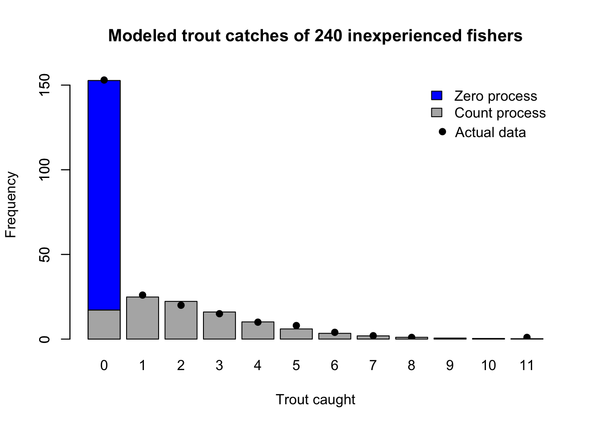

We will turn to a special type of over- or under-dispersion which describes data with an unexpectedly large or small number of zero counts. Unlike the previous section (Overdispersed models), our problem is not that we’re using the wrong distribution. Our problem is the way our data were gathered, which distorts the natural distribution(s) of the true generating process.
Hurdle models
The quasi-likelihood and negative binomial models help us to model or understand a generating process which isn’t quite Poisson-like because the overall dispersion of counts are too wide. Sometimes instead the overall shape of the distribution seems well modeled by a Poisson distribution (or a negative binomial distribution), except for the zeroes. Often we observe more zeroes than a standard probability distribution would suggest. More rarely, we might see fewer zeroes.
Consider a count process that produces a non-negative number only after some threshold has been reached, or some barrier has been broken. The zeroes and non-zero values in these models are often mutually exclusive: each observation only belongs to one group:
A major commercial airline surveys its employees and asks how many times they have piloted a passenger jet. Most employees (baggage handlers, ticketing agents, flight stewards) have never piloted a jet because they are not qualified to pilot a jet, and so they respond “0”. Almost all employees who could pilot a jet (airline captains) do pilot jets, as soon as they are eligible, and so their responses are all 1+. The captains’ responses might resemble a Poisson distribution, except that none would be 0, while the overwhelming amount of 0s from other employees would never be observed under a true Poisson distribution.
A local dentist reviews their records to find how often each patient admitted last year has been seen this year. Most patients are regulars who live within a 10 mile radius and see the dentists twice or more each year for regular cleanings, checkups, X-rays, etc. A few patients are not local or do not seek regular preventative care: they may have visited last year for a one-time surgical procedure or because they were traveling and could not visit their regular dentist. In this situation, we might even see fewer zeroes than predicted by a Poisson distribution.
These generating processes are well-suited toward a hurdle model, a two-stage modeling approach in which each observation has to clear a “hurdle” in order to generate a positive response. The “zero” component of the model uses one set of predictors to fit the probability of a zero, while the “count” component of the model uses either the same predictors or a different set of predictors to fit the probability of a non-zero count. Each component can be fit as its own GLM. The distributional assumption for the count model is often a truncated Poisson or a truncated negative binomial distribution, meaning that the distribution has the same relative weights and shape as a Poisson or negative binomial, except that no zero counts are ever allowed:
Note
Let \(X\) be a random variable distributed according to some known density \(f_X(x)\) and with cumulative distribution function \(F_X(x) = P(X \le x)\), with either discrete or continuous support along a real-valued interval including 0.
Then \(Y^+\) will be a random variable with a positive-valued truncated distribution having the density function \(f_{Y^+}(y)\) if,
This type of model affords a dangerous degree of flexibility. The modeler will have to choose which predictors to use, whether the predictors should be the same between the two model components, what the distributional assumptions are for each model component, and what the link functions are for each model component. Reasonable and well-trained data scientists may choose very different options. Happily, since the response variable remains the same we may compare all of the possible choices using AIC.
Let us return to our fishing guide and augment a past dataset with two more variables. The guide is a highly experienced fisher: if there are trout to be found, the guide will find and catch them. But the fisher can’t catch fish that aren’t there, and some of the fisher’s choices may lead to larger or smaller catches:
The guide decides that line depth and water temperature are highly predictive of whether there are any fish at all to be found, so the fisher will try an interacted model for the zero component. Meanwhile, when there are fish present, motor noise and bait type might be predictive of how many fish come to nibble at the line, and temperature might still control how many fish are in the area, so all three enter the truncated count component:
The two components of this model are interpreted separately from each other, using the same knowledge base we have gained from past GLM topics:
The zero model determines whether any fish will be caught, and line depth, water temperature, and their interaction term are all significant at the 10% level.
If the coefficients can be trusted, increased temperature leads to lower chances of catching any fish (as expected). At 15m deep, a one-degree Celsius increase in water temperature lowers the odds of catching fish by 47%.1
If the coefficients can be trusted, increased depth has a negligible or even negative effect on catching any trout, except if the water is warmer than roughly 20 Celsius, in which case fish are more likely to be found in deeper waters.2
The count model determines how many fish will be caught (assuming there are any nearby to catch). Fish seem to bite more often when it is more noisy (unexpected!), when it is colder, and when fishing lure “C” is not being used.
The strongest effects on catch amount (conditioned on a positive count) are temperature and bait. Using bait C reduces total catches by about 45%, while a 5 degree increase in temperature reduces total catches by about 42%.
The combined hurdle model has a better AIC than either a Poisson or a negative binomial model which uses all four predictors and interacts depth with temperature. That is, using the same predictors in the same ways, we see better model performance from the composite hurdle model than from any single GLM, even accounting for the extra parameters and danger of overfitting.
Zero-inflated models
In the previous section we studied a composite model which described two mutually exclusive count processes: one which generated the zeroes, and another which generated all positive counts. Let us now study a different composite model which allows zeroes to come from either the zero process or the count process. We call such models zero-inflated models, e.g. a zero-inflated Poisson (ZIP) model or a zero-inflated negative binomial (ZINB) model.
Zero-inflated models resemble hurdle models: we retain our choice of predictors, distributional assumptions, and links for both the zero process and for the count process. The result still allows us to accurately model data which are producing a different number of zeroes than would be suggested by our count distribution. So how do they differ from hurdle models?
First, and more concretely, zero-inflated models can only ever model count processes with too many zeroes, because all they do is add an additional number of zeroes to an existing count distribution. Although count processes with too few zeroes are rare, they do exist, and hurdle models would be most appropriate for these occasions.
Second, and more philosophically, zero-inflated models allow us to more accurately describe data that contains both “mandatory” zeroes and “random” zeroes. The mandatory zeroes, as with the hurdle model, face a structural barrier which prevents them from ever being positive. But the random zeroes were generated by a count process which sometimes, legitimately and probabilistically, creates a zero instead of a 1 or 2 or 3 or so on:
Suppose we survey a population of adults and ask how many traffic tickets they’ve received in the past five years. Some respondents may have received one or two or even 20 such tickets for various violations. Other respondents do not drive: they do not have a car, or do not have a valid license, and have had no chance to receive a ticket (the mandatory zeroes). But some respondents with zero tickets do drive, and have been very careful or very lucky, and although they had the chance to generate a ticket, they didn’t (the random zeroes).
Suppose we try to predict, for each player on a professional baseball team’s 26-person active roster, how many hits they will have in the next day’s game. Only nine players will actually bat during the game (most likely), and those that do bat are not guaranteed any hits. So some players will have one or more hits, some players will never have a chance for a positive count (the mandatory zeroes), and some players will try for hits but strike out or draw walks every time (the random zeroes).
Earlier, our now-familiar fishing guide led a bunch of tours for experienced fishers, who all had been fishing for four or more years. These fishers could reliably catch a fish given time and the knowledge that fish were actually there to be caught. Let’s assume now that the fisher leads a different tour for younger and less experienced fishers. These fishers may not be able to catch anything – if the water is too warm, the lake trout might be swimming deeper and out of reach. But even when lake trout are within reach, these fishers may not catch any, due to inexperience, substandard gear, or interference from other neophytes.
The fishing guide decides to model the zero process as a binomial distribution, dependent on water temperature through a logit link function. In other words, when the water is warm, there may not be any trout to catch. The fishing guide then decides to model the count process as a negative binomial distribution, dependent on experience through a log link function. The negative binomial might be appropriate here because, with so few predictors, our Poisson rates are likely being altered by unobserved forces, creating a mixture of different Poisson rates.
We may interpret these coefficients just as we have in previous sections. We confirm that water temperature is a useful predictor of whether any fish can be caught, and we confirm our suspicion that prior fishing experience helps to catch more fish (assuming fish can be caught at all). Exponentiating the coefficients provides further detail: warming the water by one degree Celsius increases the odds of a “mandatory zero” by 41%, while possessing an additional year of fishing experience increases the predicted catch total in fishable waters by 12%.3
Software tools which fit these types of models will allow you to retrieve the predicted mandatory zero probability for each observation, the predicted count process mean (conditional on not being a mandatory zero) for each observation, and even the probability of observing each possible zero or nonzero response value. Using such tooling, we can compare the actual data to the totals predicted by our regression, and even understand which predicted zeroes are mandatory and which are random:
Code
barplot(colSums(predict(trout.zinb,type='prob')),ylim=c(0,159),main='Modeled trout catches of 240 inexperienced fishers',xlab='Trout caught',ylab='Frequency',col='grey70')legend(x='topright',legend=c('Count process ','Zero process','Actual data'),pch=c(NA,NA,19),text.col=c(0,0,1),bty='n',y.intersp=1.25)barplot(t(t(c(sum(predict(trout.zinb,type='prob')[,1])-sum(predict(trout.zinb,type='zero')),sum(predict(trout.zinb,type='zero'))))),add=TRUE,col=c('grey70','#0000ff'),legend.text=c('Count process','Zero process'),args.legend=list(bty='n'))points(0.7+1.2*as.numeric(names(table(trout5))),table(trout5),pch=19,type='p')

Predicted outcomes from a zero-inflated negative binomial model
From here, we would normally stress-test the model by comparing it to alternative specifications with different predictors, different links, and/or different count distributions. We could make each of those comparisons using AIC. But having followed our fictional fisher through a series of unlikely scenarios and data analyses, we may perhaps profit more from new horizons.
A one-degree change of temperature at 15 m decreases the log-odds according to the beta on temperature, \(-2.69 \times 1 \approx -2.69\), but also increases the log-odds according to the interaction term, \(0.15 \times 1 \times 15 = 2.25\). The two effects are aggregated and then exponentiated.↩︎
Since the coefficient on depth is about -20x larger than the coefficient on the interaction term (depth x temp), the temperature needs to be about 20 C for the combined effects to change signs.↩︎
Note that the reported coefficients for the zero process assume that a “mandatory zero” is a success, i.e. that positive betas increase the chance of observing 0 (as documented by the R function pscl::zeroinfl). This behavior may run counter to readers’ intuition or other software implementations.↩︎